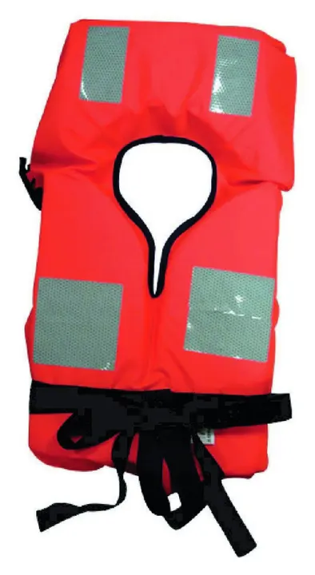

Colete Salva-Vidas 150N
Código: LA709933-150N
O colete salva-vidas 150N foram concebidos para pessoas que podem ter que esperar por socorro, mas é provável que fazê-lo em água abrigado.
- Receba a cotação por WhatsApp ou e-mail
- Junte vários produtos na mesma lista
Características
- O colete salva-vidas 150N foram concebidos para pessoas que podem ter que esperar por socorro, mas é provável que fazê-lo em água abrigado.
- Eles foram testados e certificados de acordo com a EN ISO 12402-4, EN ISO 12402-7 e EN ISO 12402-9 padrões de teste de acordo com a directiva
- 89/686 / CE, de barcos de recreio.
- Eles vêm equipados com uma largura de 30 milímetros cinto cintura, 100 centímetros fitas reflectoras (Resolução IMO A.658 (16)) e a EN ISO 12402-7 e EN
- ISO 12402-8 apito aprovado
Normas e tamanhos
EN ISO 12402-4EN ISO 12402-7EN ISO 12402-9ISO 12402